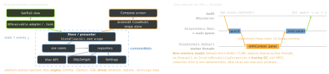

kmp · folio
In one line: A shared module is repositories + use cases + a state holder exposing
StateFlow in commonMain, built on Ktor, kotlinx.serialization,
SQLDelight, Koin and kotlinx-datetime, with per-platform engines
and drivers; each platform binds native UI to it. On iOS, Dispatchers.Main is the
main queue and the new memory model (tracing GC, no freezing) lets objects cross
threads like on the JVM.
Download PDF Print view LaTeX source


The stack — common core, platform piece
| Library | Role · platform part | iOS twin |
|---|---|---|
| Ktor client | HTTP, plugins (ContentNegotiation, auth, logging);
engine per target: OkHttp/Android · Darwin (NSURLSession) | URLSession |
| kotlinx .serialization | @Serializable + compiler plugin, no
reflection; Json { ignoreUnknownKeys = true }; sealed = class discriminator | Codable |
| SQLDelight | write .sq SQL → typed Kotlin; .sqm migrations
verified; asFlow(); driver: AndroidSqliteDriver ·
NativeSqliteDriver | GRDB / Core Data |
| Koin · kotlin-inject | runtime DSL (errors at runtime) · KSP compile-time graph; Hilt is Android-only | init injection |
| kotlinx -datetime | Instant, LocalDateTime, TimeZone —
no java.time in common | Date, Calendar |
| multiplatform -settings | KV over SharedPreferences / NSUserDefaults — not for secrets (Keychain via an interface) | UserDefaults |
| Kermit / Napier | logging to Logcat / os_log | Logger |
Exposing state to SwiftUI
- Shared store owns
CoroutineScope(SupervisorJob() + Dispatchers.Main)and aclear(); Android calls it fromonCleared, iOS from the owner’s teardown — iOS has noviewModelScope. - Swift side: SKIE (
for awaitover the flow), KMP-NativeCoroutines (asyncSequence(for:)), or a hand-writtenwatch({…}) → cancel handlewrapper. Map Kotlin types to Swift structs in the adapter.
class DevicesStore(private val repo: DeviceRepo,
private val scope: CoroutineScope) { // injected
private val _s = MutableStateFlow<Ui>(Ui.Loading)
val state: StateFlow<Ui> = _s.asStateFlow()
fun refresh() { scope.launch {
_s.value = try { Ui.Loaded(repo.devices()) }
catch (e: ApiError) { Ui.Failed(e.message) } } }
fun clear() = scope.cancel()
}.task { for await s in store.state { ui = map(s) } } // SKIEThreading & memory on iOS
Dispatchers.Mainon iOS = main dispatch queue (in coroutines-core; Android needs-android).Dispatchers.IOexists on Native since coroutines 1.7 — still inject dispatchers.- Old model (pre-1.7.20): shared objects had to be frozen (immutable) or crashed — the #1 historic KMP pain; now gone.
- Hop to
@MainActorbefore touching SwiftUI state; neverrunBlockingon the main thread. - Kotlin objects in Swift are GC-managed:
deinit-style cleanup is late — callclose()/clear()explicitly; capture[weak self]in closures handed to Kotlin.
Testing shared code
commonTest+kotlin.test;runTest= virtual time (skipsdelay);StandardTestDispatcher+Dispatchers.setMain; Turbineflow.test { awaitItem() }for hot flows.- Fakes over mocks (MockK is JVM-only); Ktor
MockEngine; in-memory SQLite driver. JVM runs fast on CI; iOS-simulator tests need macOS.
Team & process
- Ownership: a cross-platform core team, or iOS becomes a second-class consumer of an Android-shaped API. iOS devs review the Swift surface.
- Debugging: iOS devs must read Kotlin; Xcode steps into Kotlin only with a plugin (Touchlab xcode-kotlin); Kotlin/Native link time slows iOS builds.
- Delivery: monorepo + build phase (fast iteration) vs versioned XCFramework via SPM (decoupled, slower loop). Crash reports need Kotlin symbolication.
- Adopt incrementally: one module (API client, validation) behind a facade; measure, then grow.
Traps
- Forgot the iOS Ktor engine / SQL driver → compiles, fails at runtime on iOS.
catch (e: Exception)aroundsuspendeats cancellation — rethrow.StateFlowis conflated: rapid events are lost — aChannelfor events.- Hard-coded
Dispatchers.Mainin shared code = untestable on the JVM.
Remember
Core in common, engines and drivers per platform · inject scope and dispatcher · no freezing, but a GC · iOS reviews the API.